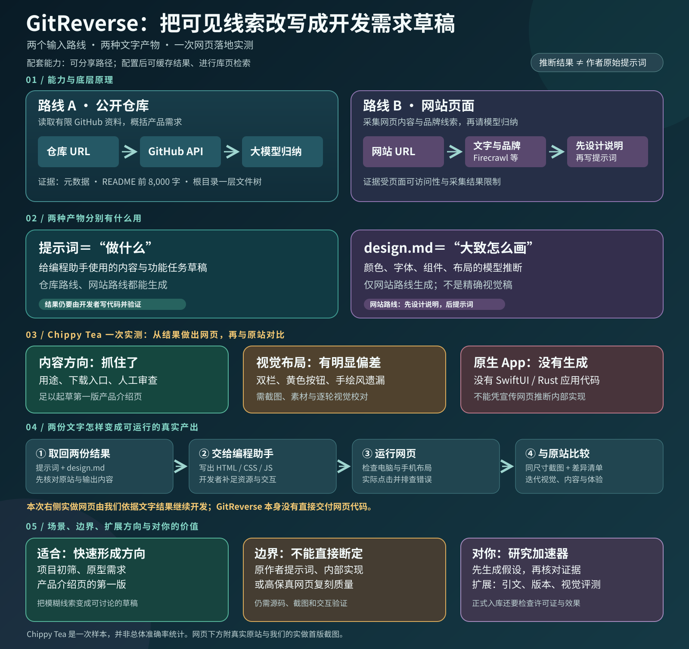
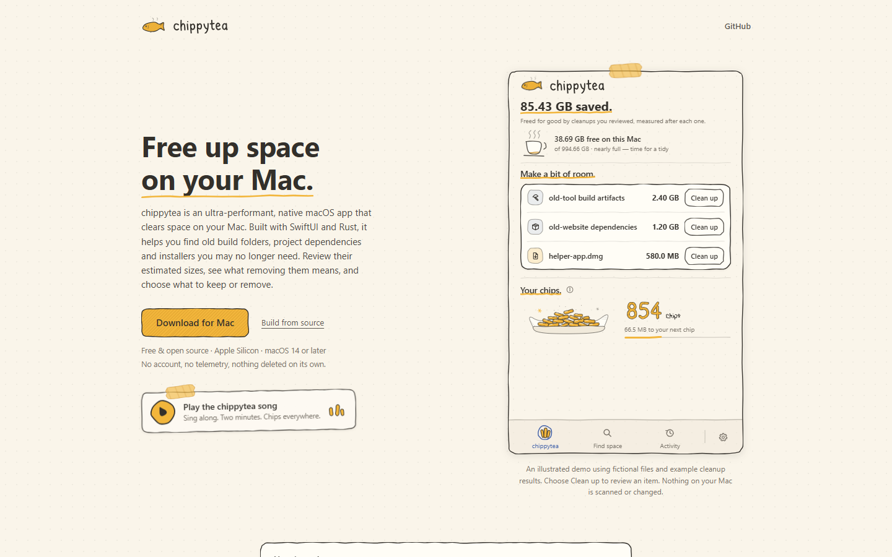
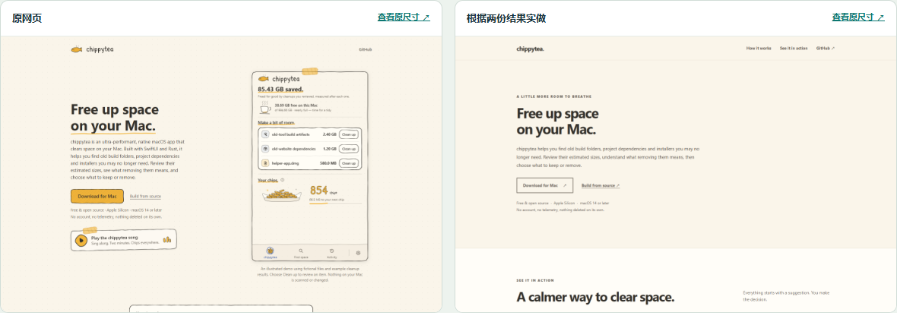

把线索写成需求草稿
输入公开 GitHub 仓库或网站地址，得到一条描述“可以做什么”的合成开发提示词。网站路线再多一份设计说明。
PROJECT 013 / GITREVERSE
GitReverse 是一个“可见资料 → 开发需求”的网页工具。它读取公开仓库或网页线索，使用大模型生成一条给编程助手看的合成提示词；网站路线还会生成设计说明。
这里的“反推”是推测怎样描述类似产品。它不能找到作者真正写过的提示词，也不会直接交付可运行网页或原生 App。
本页基于原项目文档与源码制作；下方的 Chippy Tea 案例已在 GitReverse 官网实际生成。
“请帮我做一个……，让用户能够……”
一条合成的开发提示词研究总览 / 一张图看懂
先看完整链路，再看原站与实做首版截图，最后按问题读六张结论卡片。内容结合了源码核查与 Chippy Tea 的一次实际生成、落地和视觉对比。

同一天、同尺寸截取桌面与手机首屏。中间经过 GitReverse 的提示词和 design.md，再由我们编写并运行网页。


实测结论：两份结果可以帮助做出第一版，但无法单靠文字还原原站的精确布局与品牌素材。右侧网页是后续开发成果，不是 GitReverse 直接生成的代码；以上仅代表这一次样本。
输入公开 GitHub 仓库或网站地址，得到一条描述“可以做什么”的合成开发提示词。网站路线再多一份设计说明。
仓库经 GitHub API 取证；网站经 Firecrawl 或 context.dev 采集页面和品牌线索，再由模型生成文字。配置后可缓存、检索结果。
提示词告诉编程助手做什么；design.md概括颜色、字体和布局方向。设计说明只在网站路线生成，两者都不是代码。
适合快速形成候选项目能力假设、原型需求或营销页初稿；安全审计、完整功能验收与高保真复刻需要更深入的证据。
Chippy Tea 的用途、下载和人工审查被保留；双栏首屏、黄色按钮与手绘品牌特征未准确落地。看同尺寸对比 ↗
可用它加快研究项目初稿；正式入库仍要核对源码、截图、交互、许可与实际效果。扩展时可加入证据引用、版本校验和视觉比对。
真实演示 / CHIPPYTEA.COM
2026-09-26，我们把 Chippy Tea 官网输入 GitReverse 的 Website 模式，得到公开可查看的结果。
https://www.chippytea.com/这里提交的是产品官网，不是 Mac App 安装包或源码仓库。
页面说明：这是一款用 SwiftUI 与 Rust 构建的 Mac 空间清理应用；用户挑选扫描位置、审查估算大小，再决定保留或移除。
网页还展示下载入口、构建源码入口，以及“无账号、无遥测、不会自行删除”的承诺。
生成的英文提示词开头是“Build me a simple marketing site for chippytea”，接着描述奶油色背景、Mac 风格字体、首屏文案、下载按钮和展示清理条目的区域。
你可把提示词交给编程助手，作为制作类似产品介绍页的起点。它没有产出 Chippy Tea 原作者的提示词，也没有给出 SwiftUI／Rust 应用的实现代码。

它正确抓住了“释放 Mac 空间”、人工审查、下载入口等核心信息。但生成的设计说明把主要交互色概括为灰褐色，并建议方角、平面卡片；实际页面有醒目的黄色下载按钮、手绘感边框和胶带装饰。
所以这份输出适合作为需求草稿。如果目标是忠实复刻页面，还需要以原网页截图、交互和响应式布局逐项校对。
本页只摘录了实际输出的短句，其余是中文概述；完整原文请打开上面的 GitReverse 结果链接。结果可能随服务重新生成而变化。

继续实测 / 从文字到网页我们已经用这两份结果做出可运行网页，并与原站同尺寸对比。查看实做网页、操作方法与差异分析 ↗01 / 跟着走一遍
网站路线采用上方真实的 Chippy Tea 案例；仓库路线仍是手写教学示例。切换输入，逐步查看差别。
网站路线引用 Chippy Tea 的 GitReverse 实际生成结果；仓库路线的示例提示词由本研究页手写。
02 / 能力与原理
把它理解成“资料采集 + 大模型改写需求 + 可选保存与检索”，就能看清各模块的职责。
owner/repo。design.md 设计说明。网页支持可分享的仓库路径；可选配置 Supabase 保存生成结果并开放库页搜索。README 还列出登录后的历史页。运行生成流程需要配置模型服务凭据。
03 / 最关键的边界
它根据看得到的材料猜测一个合理的需求表达。材料越浅，结论越应保留为草稿。
找不到作者的原始提示词。仓库和网页一般不记录最初对 AI 说过的话。
仓库快速路线没有逐文件审源码。一层目录和 README 无法证明所有功能真的存在。
网站页面看不到全部后台。页面样式能提供设计线索，不能证明服务器逻辑和隐藏流程。
缓存可能落后于仓库更新。当前仓库缓存命中按 owner/repo 读取，未见提交版本校验。
04 / 什么时候用
把它放在“决定是否深入研究”这一环最合适：先得到一个方向，再找证据。
快速看懂一个仓库想解决什么问题，形成待验证的能力假设。
把参考产品改写成一条可交给编程助手讨论的需求，再补范围和验收条件。
你的项目 README 需要真实发现、源码依据、归属、许可证和图片来源；生成的提示词不能替代这些记录。
来源与说明
本页对应原仓库 2026-09-25 的提交，研究及网页实测日期为 2026-09-26。原项目名称、源码与 GitReverse 实测输出归其作者；Chippy Tea 网页及截图归其作者。本页的案例解读与总览图由本研究编写。